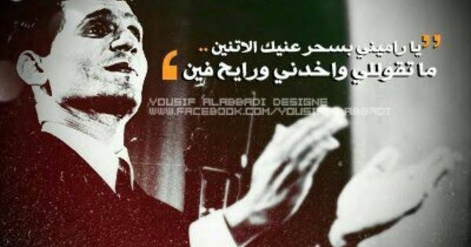

الحياة الشخصية
أم كلثوم مع أبيها الشيخ إبراهيم ولدت فاطمة لأسرة متواضعة في قرية ريفية تسمى طماي الزهايرة، في مركز السنبلاوين محافظة الدقهلية، الخديوية المصرية، كان والدها الشيخ إبراهيم إماماً ومؤذناً لمسجد في القرية ، ووالدتها فاطمة المليجي تعمل كربة منزل. تضاربت مصادر تاريخ ميلادها الدقيق، فبعض المصادر تشير إلى أن تاريخ ميلادها يعود لتاريخ
31 ديسمبر 1898م، ومصادر أخرى ترجح أن ميلادها يرجع لتاريخ 4 مايو 1908م وهو المذكور في سجل مواليد المحافظة. عاشت العائلة في مسكن صغير مُشيد من طوب طيني. وكانت حالةا لدخل المادي للأسرة منخفضة، حيث إن المصدر الرئيس للدخل هو أبيها الذي يعمل كمُنشد في حفلات الزواج للقرية.
وبالرغم من الحالة المادية الصعبة للأسرة إلا أن والديها قاما بإلحاقها بكتاب القرية لتتعلم وتعلمت الغناء من والدها في سن صغيرة، فبرزت موهبتها المميزة
، وعلمها أيضاً تلاوة القرآن، وذكرت أنها قد حفظته عن ظهر قلب. وذات مرة سمعت أباها يُعلم أخيها خالد الغناء، حيث كان يصطحبه ليغني معه في الاحتفالات، فعندما سمع ما تعلمته انبهر من قوة نبرتها، فطلب منها أن تنضم
معه لدروس الغناء، وبدأت الغناء بسن الثانية عشر وذلك بعدما كان يصطحبها والدها إلى الحفلات لتغني معه وكانت تغني وهي تلبس العقال علي بك أبو حسين قال لوالدها: لديك كنز لا تعرف قدره... يكمن في حنجرة ابنتك، وأوصاه بالاعتناء بها.
بدأ صيت أم كلثوم يذيع منذ صغرها، حين كان عملها مجرد مصدر دخل إضافي للأسرة، لكنها تجاوزت أحلام الأب حين تحولت إلى المصدر الرئيس لدخل الأسرة، أدرك الأب ذلك عندما أصبح الشيخ خالد ابنه المنشد وعندما أصبح الأب ذاته في بطانة ابنته الصغيرة. وفي ذات مرة تصادف
أن كان أبو العلا معها في القطار وسمعها تردد ألحانه دون أن تعرف أنه معها في القطار، وذلك بعد عام 1916م حيث تعرف والدها على الشيخين زكريا أحمد وأبو العلا محمد اللذين أتيا
إلى السنبلاوين لإحياء ليالي رمضان وبكثير من الإلحاح أقنعا الأب بالانتقال إلى القاهرة ومعه أم كلثوم وذلك في عام 1922م. كانت تلك الخطوة الأولى في مشوارها
الفني. حينها أحيت ليلة الإسراء والمعراج بقصر عز الدين يكن باشا وأعطتها سيدة القصر خاتما ذهبيا وتلقت أم كلثوم 3 جنيهات أجراً لها. تزوجت من السيد حسن السيد الحفناوي في عام 1954 إلى عام 1975.
البدايات
عادت إلى القاهرة لكي تستقر نهائياً في عام 1921م. وكانت تغني في مسرح البوسفور في ميدان رمسيس بدون فرقة موسيقية. وغنت على مسرح حديقة الأزيكية واشتهرت بقصيدة «وحقك أنت
المنى والطلب» وتعد هذه أول إسطوانة لها صدرت في منتصف العشرينيات وبيع منها ثمانية عشر ألف إسطوانة. وتعلمت أم كلثوم لاحقًا من أمين المهدي أصول الموسيقى، وكذلك تعلمت عزف العود على يد أمين المهدي ومحمود رحمي ومحمد القصبجي.
في عام 1923م غنت في حفلات كبار القوم، كما غنت في حفل حضرته كبار مطربات عصرها وعلى رأسهم منيرة المهدية شخصياً والتي كانت تلقب بسلطانة الطرب، والتقت في نفس العام بالموسيقار محمد عبد الوهاب لأول مرة بحفلة أقيمت في منزل والد أبي بكر خيرت.
في عام 1924م تعرفت إلى أحمد رامي عن طريق أبي العلا، في إحدى الحفلات التي أدت أم كلثوم فيها أغنية «الصب تفضحه عيونه» كان أحمد رامي حاضرًا بعد أن عاد من أوروبا ، فأدرك أنه قد وجد هدفه. غير أن البداية الحقيقية كانت عندما سمعها محمد القصبجي الملحن المجدد وقتها. في نفس العام 1924م
، تعرفت أم كلثوم إلى طبيب أسنان يهوى الموسيقى هو أحمد صبري النجريدي أول ملحن يلحن لأم كلثوم ألحانا خاصة بها، إلا أن ألحانه اعتمدت على الزخارف الموسيقية بشكل مبالغ فيه مما دفع أم كلثوم إلى إنهاء التعاون معه مبكرًا.
أول فرقة موسيقية
بدأ محمد القصبجي في إعداد أم كلثوم فنيا ومعنويا مشكلًا لها فرقتها الخاصة، وأول تخت موسيقي يكون بديلا لبطانة المعممين التي كانت معها دائما، عندما شنت روز اليوسف والمسرح هجوما صاعقا على بطانتها
. لعل هذا ما جعل أباها يتخلى عن دوره كمنشد وينسحب هو والشيخ خالد. بعد ذلك بعام تقريبا خلعت أم كلثوم العقال والعباءة وظهرت في زي الآنسات المصريات، وذلك بعد أن توفى الشيخ (أبو العلا محمد) الذي ترك فيها تأثيرا روحيا عظيما وكان مرشدها في عالم الطرب.
كان شائعًا في أوائل القرن العشرين أن يقدم المطربون قصائد بعينها بصرف النظر عن تفرد أحدهم بها، وكانت المباراة بين المطربين تكمن في كيفية أداء نفس القصيدة. وهكذا أدت أم كلثوم قصيدة (أراك عصي الدمع) مرة من ألحان السنباطي، ومرة أخرى من ألحان عبده الحامولي عام 1926.
الأغاني التي غنتها أم كلثوم
- شمس الأصيل
- حق بلادك
- نصرة قوية وفرحة هنية
- صوت بلدنا
- التي في خاطري وفي دمي (صوت الوطن)
- ياسلام على عيدنا
- نشيد الجلاء (يا مصر إن الحق جاء)
- أنا فدائيون
- ثوار ثوار
- قم واسمعها من أعماقي
- راجعين بقوة السلاح
- أنشودة الجيش
- والله زمان يا سلاحي
- وكانت من اشهر اغانيها: امل حياتي يا ظالمني
زواجها
عام 1954 تزوجت أم كلثوم من د. حسن السيد الحفناوي واستمر الزواج حتى وفاتها. زيجة واحدة فقط، ورجال كُثر، الطبيب حسن السيد الحفناوي هو الذي فاز رسمياً بلقب زوج السيدة أم كلثوم
أو "السِت" كما تُلقب، فيما قلبها تنازع عليه كثيرون، والأقاويل لم تتوقف يوماً عن حياتها العاطفية . حكايات عديدة ربطتها بأسماء كبار صُنَّاع الأغنيات في تلك الفترة، مثل الملحن محمود الشريف والموسيقار محمد القصبجي وأيضاً
الشاعر أحمد رامي، فثمة حديث عن عقد زواج عرفي وُجد بالمصادفة، كان يجمعها بالصحافي مصطفى أمين، بخلاف زيجة صورية اضطرت إليها كي تتمكن من السفر حينما كانت مطربة شابة في بداية حياتها. (مرفق مجموعة من الصور النادرة من ألبوم العائلة، وصور من مسقط رأسها)
مرضها
أم كلثوم جدول حفلاتها الموسيقية بسبب المشاكل الصحية التي تعاني منها. ويُذكر أن النظارة السوداء التي كانت ترتديها بشكل مستمر كانت بسبب مرض الغدة الدرقية الذي أدى إلى جحوظ عينيها، حيثُ كان هذا سبباً أيضاً لإيقافها لنشاطها التمثيلي الذي اقتصر على 6 أفلام.
المرض والوفاة
موكب جنازة أم كلثوم في عام 1975م، القاهرة، مصر. خبر في صحيفة الأهرام المصرية عن وفاة أم كلثوم. لم تتمكن من غناء أغنية أوقاتي بتحلو معاك وحياتي بتكمل برضاك، فأثناء البروفات للأغنية وقعت صريعة
لمرض التهاب الكلى. سافرت إلى لندن لتلقي لعلاج وكانت قبل سفرها قد طلبت من الشاعر صالح جودت أن يكتب لها أغنية بمناسبة حرب أكتوبر وبعد عودتها طلبت من الملحن رياض السنباطي تلحينها حتى تغنيها في عيد النصر لكنها توفيت قبل تأديتها.
بدأت صحتها تسوء في عام 1971م، فانقطعت عن تقديم الحفلات، وكانت أغنية ليلة حب آخر ما غنّته وذلك في 17 نوفمبر 1972م، وفي 21 يناير 1975م أوشكت على الوفاة بسبب عدة مشاكل بكليتيها، وبالرغم من السنوات العديدة من تلقي العلاج، رفضت الإقامة في المستشفى
لتلقي العلاج حيث كانت تقول: لو ذهبت للمستشفى، فسوف أموت هناك. في 22 يناير 1975م تصدرتْ أخبار مرض أم كلثوم الصحف وكانت الإذاعة تستهل نشراتها بأخبار مرض أم كلثوم وعرض الناس التبرع بالدم لأم كلثوم.
في يوم الأثنين 3 فبراير 1975م عند الرابعة مساءاً توفيت أم كلثوم في القاهرة بسبب قصور القلب عن عمر يناهز 76 عاماً، وشُيعت جنازتها
من مسجد عمر مكرم الواقع بوسط القاهرة، وكانت جنازةً مهيبة ومن أكبر الجنازات في العالم إذ قُدِّر عدد المشيعين بين 2 إلى 4 ملايين شخص. أعلنت
إذاعات الشرق الأوسط والبرنامج العام وصوت العرب عن وفاتها، وظهر يوسف السباعي في تمام السادسة مساءً ليلقي النبأ، بينما وقف سيد مرعي رئيس مجلس الشعب دقيقة حداداً. أرسل الأمير عبد الله الفيصل هدية عبارة عن عدة ليترات من ماء زمزم وصلت مباشرة من الأراضي المقدسة كواجب أخير.
كتبت صحيفة الأورو الفرنسية أنها مثّلت للعرب ما مثّلته إديث بياف للفرنسيين إلا أن عدد معجبيها أضعاف عدد معجبي إديث بياف. كتب بيجل كاربيير في صحيفة الفيجارو/لو فيغارو أنه برغم أن الأوروبيين
لم يفهموا الكلمات إلا أنها وصلت إلى روحهم مباشرة. صحيفة التايمز تكتب أنها من رموز الوجدان العربي الخالدة. صحيفة زود دويتش سايتونج الألمانية كتبت أن مشاعر العرب اهتزت من المحيط إلى الخليج. الصحف العربية رددت النبأ في الصفحات الأولى بينما سيطر الوجوم على العرب.
الحياه الشخصية
ولد في قرية الحلوات التابعة لمركز الإبراهيمية محافظة الشرقية، وهو الابن الأصغر بين أربعة إخوة هم إسماعيل ومحمد وعليا. توفيت والدته بعد ولادته بأيام وقبل أن يتم عبد الحليم عامه الأول توفي والده ليعيش اليتم من جهة الأب كما عاشه من جهة الأم من قبل ليعيش بعدها
في بيت خاله الحاج متولي عماشة. كان يلعب مع أولاد عمه في ترعة القرية، ومنها انتقل إليه مرض البلهارسيا الذي دمّر حياته. ولقد قال مرة أنا ابن القدر، حيث أجرى خلال حياته واحد
وستين عملية جراحية. كان حليم الابن الرابع وأكبر إخوته هو إسماعيل شبانة الذي كان مطرباً ومدرساً للموسيقى في وزارة التربية. التحق حليم، بعدما نضج قليلا في كتاب الشيخ أحمد؛ ومنذ دخول العندليب الأسمر للمدرسة تجلّى
حبه العظيم للموسيقى حتى أصبح رئيسا لفرقة الأناشيد في مدرسته. ومن حينها وهو يحاول الدخول لمجال الغناء لشدة ولعه به. التحق بمعهد الموسيقى العربية قسم التلحين عام 1943. حين التقى بالفنان كمال الطويل, كان عبد الحليم طالبا في قسم تلحين، وكمال في قسم الغناء والأصوات، وقد درسا معا في المعهد حتى تخرجهما عام 1948 ورشح للسفر في بعثة حكومية إلى الخارج لكنه ألغى سفره وعمل 4 سنوات مدرساً للموسيقى
بطنطا ثم الزقازيق وأخيرا بالقاهرة. ثم قدّم استقالته من التدريس والتحق بعدها بفرقة الإذاعة الموسيقية عازفا على آلة الأوبوا عام 1950. تقابل مع مجدي العمروسي في 1951 في بيت مدير الإذاعة في ذلك الوقت الإذاعي فهمي عمر. اكتشف عبد الحليم شبانة الإذاعي حافظ عبد الوهاب الذي سمح له باستخدام اسمه "حافظ" بدلا من شبانة.
وفقاً لبعض المصادر فإن عبد الحليم أُجيز في الإذاعة بعد أن قدم قصيدة "لقاء" كلمات صلاح عبد الصبور، ولحن كمال الطويل عام 1951، في حين ترى مصادر أخرى أن إجازته كانت في عام 1952 بعد أن قدم أغنية "يا حلو يا أسمر" كلمات سمير محجوب، وألحان محمد الموجي، وعموماً فإن هناك اتفاقاً أنه غنّى (صافيني مرة) كلمات سمير محجوب،
وألحان محمد الموجي في أغسطس عام 1952 ورفضتها الجماهير من أول وهلة حيث لم يكن الناس على استعداد لتلقّي هذا النوع من الغناء الجديد. ولكنه أعاد غناء "صافيني مرة" في يونيو عام 1953، يوم إعلان الجمهورية، وحققت نجاحاً كبيراً، ثم قدّم أغنية "على قد الشوق" كلمات محمد علي أحمد، وألحان كمال
البدايات
تمتد هذه الفترة من إجازته في الإذاعة عام 1951 بعد تقديمه قصيدة "لقاء" من كلمات صلاح عبد الصبور وألحان كمال الطويل، حتى بدء تصويره أول أفلامه "لحن الوفاء" عام 1955، ولم تكن أعراض مرض البلهارسيا قد تفاقمت لديه.
نلاحظ في هذه الفترة أن عدد كبيراً من الأغاني تحوي نبرة من التفاؤل مثل: "ذلك عيد الندى"، "أقبل الصباح"، "مركب الأحلام"، "في سكون الليل"، "فرحتنا يا هنانا"، "العيون بتناجيك"، "غني..غني"، "الليل أنوار وسمر"، "نسيم الفجرية"، "ريح دمعك"،"اصحى وقوم"، "الدنيا كلها".
كما تتحدث بعض هذه الأغاني عن الطبيعة الجميلة، مثل: "الأصيل الذهبي"، "هل الربيع"، "الأصيل". كما تتناول بعض الأغاني العاطفية ذكر الطبيعة الجميلة في إطار عشق الإنسان لكل ما هو جميل مثل "ربما"، "في سكون الليل"
، "القرنفل"، "حبيبي ف عنيه"، "صحبة الورد"، "ربيع شاعر"، "الجدول"، "إنت ِإلهام جديد"، " "هنا روض غرامنا"، "فات الربيع". لكن مع تفاقم مرض البلهارسيا لديه بدءاً من عام 1956، نلاحظ أن نبرة التفاؤل بدأت تختفي من أغانيه تدريجياً، وتحل محلها نبرة الحزن في أغانيه.
اول فرقه موسيقية
تعاون مع الملحن العبقري محمد الموجي وكمال الطويل ثم بليغ حمدي، كما أن له أغاني شهيرة من ألحان موسيقار الأجيال محمد عبد الوهاب مثل: (أهواك، نبتدي منين الحكاية، فاتت جنبنا)، ثم أكمل الثنائي (حليم - بليغ) بالاشتراك مع الشاعر المصري المعروف محمد حمزة أفضل الأغاني العربية من أبرزها:
زي الهوا، سواح، حاول تفتكرني، أي دمعة حزن لا، موعود وغيرها من الأغاني. وقد غنى للشاعر الكبير نزار قباني أغنية قارئة الفنجان ورسالة من تحت الماء والتي لحّنها الموسيقار محمد الموجي. بعد حرب 1967, غنى في حفلته التاريخية أمام 8 آلاف شخص في قاعة ألبرت هول في لندن لصالح
المجهود الحربى لإزالة آثار العدوان. وقد قدّم عبد الحليم في هذا الحفل أغنية المسيح، كلمات عبد الرحمن الأبنودي وألحان بليغ حمدي، وغنّى في نفس الحفل أغنية عدى النهار، وهي أيضاً للأبنودي وبليغ، وهي واحدة من أبرز أغاني حفلات عبد الحليم على مدار تاريخه الطويل.
الاغاني التي غناها عبد الحليم
- صافيني مرة
- إحنا كنا فين
- على قد الشوق
- توبة
- يا خليّ القلب
- في يوم في شهر في سنة
- موعود
- لقاء
- رسالة من تحت الماء
- حبيبها
- قارئة الفنجان
- جانا الهوى
- من غير ليه
- حبيبتي من تكون
- وكانت من اشهر اغانيه: جانا الهوي اسمر يا اسماراني
زواجه
في بداية حياته كانت هناك "فاطمة" إحدى قريبات زوجة خال عبد الحليم حافظ، وكانت من قرية الحلوات مسقط رأسه، كان هذا حب الطفولة والمراهقة، أما في سن الصبا فكانت فتاة الأسكندرية "عايدة"والتى ذاعت عن قصتهما العديد من الحكايات، حتى غنى لها "في يوم في شهر في سنة، وبتلوموني ليه" ويحكى أنها كانت شديدة الجمال ومن كبار عائلات الأسكندرية
زبيدة ثروت الفنانة زبيدة ثروت صاحبة الوجه الملائكي، التى شاركت الفنان عبد الحليم حافظ بطولة فيلم "يوم من عمرى"، تعددت الروايات حول حقيقة ما ظهر عليها من مشاعر حب، لدرجة أن مجلة "الموعد" البنانية نشرت بعد رحيل" العندليب" قصة حبهما وأنه طلب يدها بالفعل من والدها ولكنه رفض .
سعاد حسني جمع الحب بين قلب حليم وسعاد حسنى كانت تلك قصة أكدها أهله بعد وفاته، وذكرها هو في مذكراته قائلًا: " نعم أحببت سعاد حسني، والذي جمع بيننا هو الحنان؛ لأنها عاشت مثلي طفولة قاسية، وعلمتها كيف تختار حياتها، وعندما تمردت على صداقتي أحسست أنها نضجت، وسعاد كانت تتصرف بتلقائية مع الناس وبدأت هذه التلقائية تسيء إليها، لكن فيها ميزة رائعة وهي الوفاء لأسرتها".
مرضه
أصيب العندليب الأسمر بتليف في الكبد سببه مرض البلهارسيا، وكان هذا التليف سبباً في وفاته عام 1977م وكانت أول مرة عرف فيها العندليب الأسمر بهذا المرض 1956م عندما أصيب بأول نزيف في المعدة وكان وقتها مدعواً على الإفطار بشهر رمضان لدى صديقه مصطفى العريف.
الأطباء الذين عالجوه في رحلة مرضه: الدكتور مصطفى قناوي، الدكتور ياسين عبد الغفار، الدكتور زكي سويدان، الدكتور هشام عيسى، الدكتور شاكر سرور، ومن إنجلترا الدكتور تانر، الدكتورة شيلا شارلوك، الدكتور دوجر ويليامز، د.رونالد ماكبث، ومن فرنسا د.سارازان فرنسا.
كانت له سكرتيرة خاصة هي الآنسة سهير محمد علي وعملت معه منذ 1972 وكانت مرافقته في كل المستشفيات التي رقد فيها. المستشفيات التي رقد فيها بالخارج: مستشفى ابن سينا بالرباط (المغرب)، وفي إنجلترا: مستشفى سان جيمس هيرست، ولندن كلينك، فيرسنج هوم، مستشفى كنجز كولدج (المستشفى الذي شهد وفاته)،
وفاة العندليب
توفي يوم الأربعاء في 30 مارس / آذار 1977 في لندن عن عمر يناهز السابعة والأربعين عاماً، والسبب الأساسي في وفاته هو الدم الملوث الذي نقل إليه حاملاً معه التهاب كبدي فيروسي فيروس سي الذي تعذر علاجه مع وجود تليف في الكبد ناتج عن
إصابته بداء البلهارسيا منذ الصغر كما قد أوضح فحصه في لندن، ولم يكن لذلك المرض علاج وقتها وبينت بعض الآراء أن السبب المباشر في موته هو خدش المنظار الذي أوصل لأمعائه مما أدى إلى النزيف وقد حاول الأطباء منع النزيف بوضع بالون ليبلعه لمنع تسرب الدم ولكن عبد الحليم
مات ولم يستطع بلع البالون الطبي. حزن الجمهور حزناً شديداً حتى أن بعض الفتيات من مصر انتحرن بعد معرفتهن بهذا الخبر. وقد تم تشييع
جثمانه في جنازة مهيبة لم تعرف مصر مثلها سوى جنازة الرئيس المصري الراحل جمال عبد الناصر والفنانة الراحلة أم كلثوم سواء في عدد البشر المشاركين في الجنازة الذي بلغ أكثر من 2.5 مليون شخص، أو في انفعالات الناس الصادقة وقت التشييع.


سنين ومرت زي الثواني في حبك
كان يوم حبك اجمل صدفه